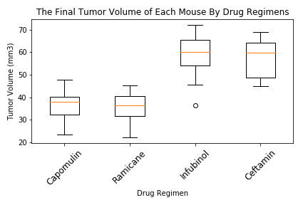
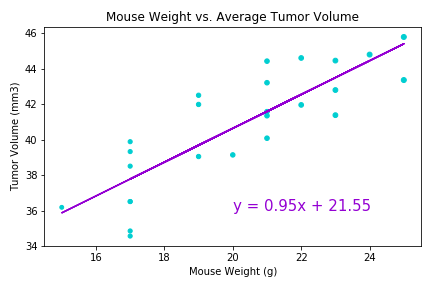

This is my matplotlib homework.
Looking at the Tumor Volume over the Timepoint for four mice treated with Capomulin, we can see that for three of the mice, their tumor volume had a steady decrease in volume over the timepoints, suggesting that Capomulin has a positive effect on decreasing tumors.
Looking at the last tumor volume for these four drug regimens, we can see that both Capomulin and Ramicane have a similar effect on the tumor volume.
Looking at the data in the scatter plot, it appears that there is a strong positive correlation (correlation coefficient = 0.84) between mouse weight and average tumor volume. This is made clearer with the linear regression line. The strong positive correlation between suggests that the heavy the mouse is the larger their average tumor volume will be.
Back to Home